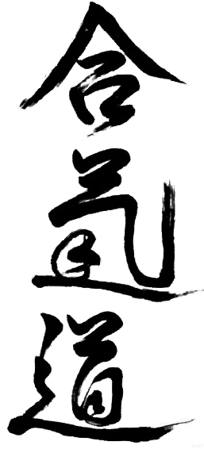
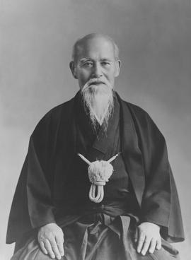
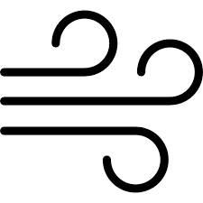

Aikido
El Camino de la Armonía y la Paz
Una introducción al arte marcial moderno de Japón
¿Qué es el Aikido?
Un sistema de defensa personal que busca neutralizar la agresión sin causar daño innecesario, transformando el conflicto en equilibrio.
Morihei Ueshiba: El Fundador

O-Sensei (1883 - 1969)
Ueshiba desarrolló el Aikido tras dominar artes marciales clásicas como el Daito-ryu Aiki-jujutsu. Su visión cambió después de la guerra, buscando un arte que uniera a la humanidad. Definió el Aikido no como un método para derrotar a otros, sino como un camino para conquistar las propias limitaciones y vivir en paz.
Los tres Pilares

Ai (Armonia)
Unir y coordinar nuestra energía con la del entorno y el oponente, evitando el choque frontal.
Ki (Energía Vital)
El flujo espiritual y físico que anima todo ser. Aprendemos a extenderlo y dirigirlo con intención.
Do (Camino)
Una vía de autodescubrimiento y disciplina que se extiende más allá del dojo a la vida diaria.